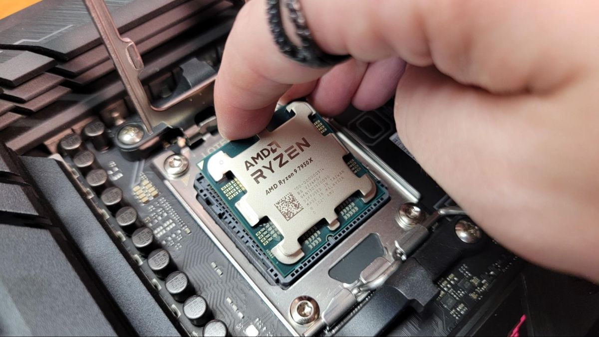
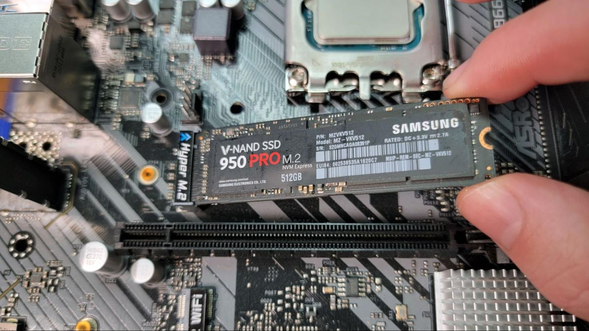

Building a Computer - Part Two
The Process
In the previous post, I talked about the parts that make up a computer. If you have not read that section yet, please do so! In this post, I will discuss the process of building a computer.
Motherboard
The first series of steps to take is to prepare the motherboard.
Place your motherboard on a flat surface. It is highly recommended to be a plastic, non-conductive surface such as the box the motherboard was shipped in. This is to prevent static electricity and any electrical damage to the components.
In the center of the motherboard is the CPU socket. Remove the protective plastic cover and open the slide latch to reveal the pins. The socket and the pins inside are extremely fragile; do not touch them. The CPU and motherboard socket will each have a small indicator in one corner - usually an arrow or triangle. With the CPU in-hand, align the indicators and insert the CPU. The CPU will only fit in one way, so do not force it in, as this will damage the pins. Once the CPU is inserted, close the slide latch to secure it in place.

Next, we will install the CPU cooler. If your cooler is a fan and heatsink combo, screw the fan(s) to the side of the heatsink. Once attached, place the heatsink on top of the CPU. The bottom of the heatsink contains pre-applied thermal paste to better regulate temperature. Do not touch this paste and do not twist the heatsink once placed, as it may lead to an unbalanced thermal load. Once the heatsink is aligned, screw the heatsink to the motherboard-provided holes around the socket.
If your cooler is an all-in-one (AIO) liquid cooler, attach the place the water block (the CPU-sized square) to the CPU and screw it down. An AIO contains water sealed within a radiator and tubing, so don't worry about it for now.
Next, we will install the RAM. Sticks of RAM fit inside the DIMM slots. There are a number of these slots in parallel, usually located next to the CPU. The RAM will have a notch on one side, which will only fit into the motherboard in one way. Align the notch with the notch on the motherboard and insert the RAM. Once inserted, push down on the RAM until it clicks into place. Repeat this process for all of the RAM sticks you have.
As mentioned earlier, there are multiple types of storage. There is a particularly popular type of SSD called an M.2 NVMe SSD. Unlike other storage formats, which commonly require a drive bay and a SATA cable connection, M.2 drives are installed directly onto the motherboard similar to RAM. Because of this, they are faster, more efficient, and easier to use. See the motherboard manual for the location of the M.2 SSD slot. The M.2 drive will have a notch on one side, which will only fit into the motherboard in one way. Align the notch with the notch on the motherboard and insert the M.2 drive. Once inserted, push down on the M.2 drive and screw it in.
One corner of the motherboard contains a number of ports. These rear ports are the external periperals for input and output (I/O), such as USB, audio, ethernet, and more. With the motherboard, you should have received a small plate that fits over the ports. This plate is called the I/O shield. The I/O shield is important because it protects the ports from damage and prevents short circuits. Place the I/O shield over the ports and screw it into place. It fits in one way, so you don't have to worry about aligning it.
Nice! At this point, you've done the most essential parts of the PC build: setting up the motherboard. Now we get to put it in the case!
Case
Let's work with the case. Open the side panel and take a look at the inside of the case: you should see a space with lots of small screws in holes. This is the motherboard tray, and those small screws are the motherboard standoffs. These standoffs are used to keep the motherboard from touching the metal case and shorting out. Remove the standoffs, place your motherboard in the case, and re-screw the standoffs into the motherboard tray. There are between 6 and 12 standoffs depending on the size of the motherboard. The motherboard shouldn't move or vibrate; give it a little shake to make sure it's secure. The motherboard should be aligned with all of the rear ports (and I/O shield) facing the back. If done correctly, the shield should just press against the back of the case.
If you have an AIO liquid cooler, now's the time to install it in the case. You can either install it onto the top or the front; the choice is yours. The only difference will be the way the water flows. If top-mounted, cool water will flow down to the CPU faster and rise to the radiator slower, and vice versa. Both the front panel and the top panel will support the size of a standard radiator (fans under ~380mm). After finding the radiator mounting holes, simply screw it in.
Next comes the power supply. The power supply is mounted to the back of the case near the bottom. This is so it can intake cool air from below the case. The power supply will have a number of cables coming out of it. These cables are used to connect the power supply to the motherboard and other components. Slide the PSU in and screw it into place. We will worry about the cables later.
The last of the core steps is the GPU. You might be surprised to find that there are a lot of empty longwise slots in the motherboard. These are called PCI Express (PCIe) slots and come in flavors of x1, x2, x4, x8, and x16, referencing the size of the slot and the supported bandwidth. You didn't know it, but your M.2 SSD is actually a PCIe x4 device under-the-hood. (The DIMM slots of RAM are inherently the same, but more specialized.) GPUs, among other various addons, are also PCIe devices! Because GPUs are so large and data-hungry, they need a full x16 slot.
Fancy motherboards will have multiple of each type of slot, and again, the slots you choose do matter. The manual tells you which slots should be used in conjunction with each other and how to maximize the efficiency of the PCIe lanes. The GPU will have a notch on one side, which will only fit into the x16 slot one way. Align the notches and insert the GPU. Once inserted, push down on the GPU until it clicks into place. It should be aligned with the rear ports and the back of the case, like the I/O shield.

Conclusion to Part 2
Great! You've installed all the core parts into the case. You're almost at the finish line. What's left? Fans, cables, connectors, and any small peripherals left to take care of.
Back to Part 1.
Go to Part 3.